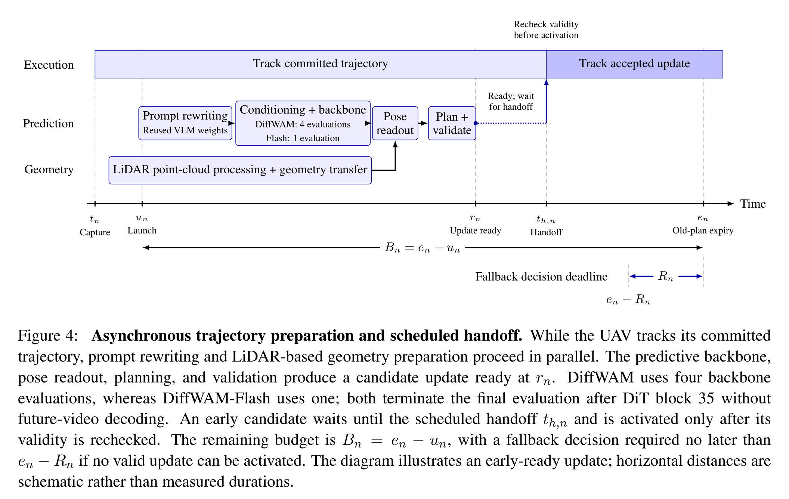

How much motion actually lives in the representations of a generative video model?
Embodied navigation usually asks “where to go and what to do next”, yet turning complex language instructions into continuous, executable trajectories that respect direction, clearance and spatial-scale constraints has long been a weakness of VLA / VLN systems. DiffWAM narrows this question: before the future video is fully generated, are the generator's intermediate representations already sufficient to recover the underlying navigation motion?
Q1At which denoising stage does decodable motion start to emerge?
Early predictive features are not explicit pose encodings — scene appearance, camera motion, object motion, language conditioning and future uncertainty are entangled. DiffWAM reads H3 layers 15 / 25 / 35 in a single truncated forward, avoiding the full video-generation schedule.
Q2Which depths and representations help most for action generation?
Different network depths encode different types of information with uneven contributions to motion reconstruction. DiffWAM fuses the three layers with softmax weights, followed by frozen factorized spatiotemporal blocks, letting the fusion and the decoder learn each layer's role from data.
Q3How to map efficiently to trajectories with geometric and metric scale?
Motion inferred purely from implicit representations may lack physical scale. DiffWAM uses frozen MoGe2 to estimate first-frame geometry (8×14 grid, median-depth scale s₀), grounding the generated features into metric poses in the initial-camera frame.
STwo-stage training: read out first, then distill
S1 navigation-aware pretraining establishes a stable representation→motion map; S2 geometry-guided OPD pairs early states with full-video reconstructed trajectories from the same rollout. The teacher (Pi3 reconstruction + MoGe2 scale calibration) sees only complete videos; the student uses only early features and first-frame geometry at deployment — asymmetric supervision keeps reconstruction out of the deployment path.
Three contributions
Moving from a “generate-then-reconstruct” paradigm to single-forward decoding, with evidence from controlled studies and a latency-aware execution framework.
Single-forward, geometry-conditioned Latent2Pose
Grounds camera trajectories directly in the initial predictive state of a frozen video generator: a spatiotemporal decoder preserves motion evidence across locations and time, while first-frame geometry supplies spatial reference and estimated scale. One truncated generator computation predicts a five-second pose sequence — no full video generation and no multi-frame reconstruction at deployment.
38 future poses · 8 transformer blocksA controlled study of geometric supervision and generated-data scaling
On a common 500-request development-set protocol with a fixed update budget, scaling generated supervision from 1,000 to 64,000 pairs reduces position RMSE from 2.1608 to 1.4620 estimated meters; spatial geometry improves positional agreement, while additional teacher constraints show mixed effects across tasks and metrics.
RMSE 2.1608 → 1.4620 mLatency-aware integration for continuous UAV execution
Predictive features and first-frame geometry are processed in parallel, with timestamp-aware asynchronous trajectory handoff: the next motion proposal is prepared while the UAV executes the current committed trajectory, addressing both proposal-computation latency and the reference-frame mismatch caused by motion during inference. Overall inference speed improves by more than 100%.
>100% inference speed-upDiffWAM: grounding predictive representations into motion
Given an initial RGB observation and a language instruction, DiffWAM performs one truncated forward in the generator's initial predictive state and extracts multi-level features; Grid-Motion establishes timestamp- and geometry-conditioned anchor associations before memory pooling; Latent2Pose combines the motion memory with first-frame geometry and outputs a time-indexed continuous camera-pose sequence.

DiffWAM overview. An initial RGB observation and a language instruction condition a frozen video model; one truncated forward yields predictive features, decoded by Grid-Motion and the geometry-conditioned Latent2Pose into a camera-trajectory proposal, with first-frame geometry providing spatial reference and scale. Full video generation and reconstruction are used only by the offline teacher (S0–S2). (Fig. 1 · DiffWAM_Pipeline)
1One truncated forward
Multi-level predictive features are read from the frozen video generator — full video generation never runs at deployment.
2Grid-Motion & Latent2Pose
39 video-time slots → 312 motion-memory tokens, decoded into 38 future camera poses with metric scale from first-frame geometry.
3Geometry-guided distillation
An offline teacher (full video + MoGe2 depth) calibrates scale; deployment uses only early features and first-frame geometry.

DiffWAM internal architecture. Multi-level predictive features (layers 15 / 25 / 35, 5,376 → 512 dims) are fused and processed by factorized spatiotemporal modules; Grid-Motion builds geometry-conditioned associations before pooling 39 video-time slots into 312 motion-memory tokens; the direct decoder outputs 38 future poses with position / rotation heads. An offline teacher reconstructs complete videos (Pi3) and calibrates scale with MoGe2. (Fig. 2 · DiffWAM_Internal_model_architecture)
Hiding inference latency inside the execution time of committed trajectories
Parallel proposal preparation, prospective alignment and safety-gated asynchronous handoff overlap inference with ongoing flight.

Benchmarks and trajectory quality: first across all three datasets
The DiffWAM-1000 evaluation set contains 1,000 test samples and 18 task types, split scene-isolated; tasks fall into four families: basic motion, object interaction, spatial navigation and scene understanding. All benchmark results use a unified 1-meter endpoint criterion (FDE ≤ 1 m indoors / ≤ 3 m outdoors).
Success rate across three benchmarks (SR %)
Unified 1 m endpoint criterion; DiffWAM ranks first on IndoorUAV-VLA, UAV-FLOW-Sim and DiffWAM-1000
DiffWAM-1000 across four families vs. the strongest baseline
BM basic motion · OI object interaction · SN spatial navigation · SU scene understanding (baseline = strongest competing method per family)
| Method | IndoorUAV-VLA avg | UAV-FLOW-Sim avg | BM | OI | SN | SU · avg |
|---|---|---|---|---|---|---|
| WorldVLN | 39.32 | 80.24 | 86.00 | 56.62 | 50.77 | 54.00 · 58.40 |
| ImagineUAV | 33.78 | 69.65 | 68.00 | 39.85 | 32.67 | 56.00 · 43.20 |
| Fast-WAM-UAV | 35.69 | 71.27 | 73.00 | 52.34 | 38.67 | 51.00 · 52.20 |
| WorldFly | 25.71 | 53.98 | 64.00 | 24.08 | 28.62 | 41.00 · 30.50 |
| DiffWAM (ours) | 56.77 | 91.42 | 92.00 | 70.35 | 74.03 | 84.00 · 74.40 |
Absolute gains over the strongest baseline per family on DiffWAM-1000: +6.00 / +13.73 / +23.26 / +28.00 pp; overall absolute gains across the three datasets: +17.45 / +11.18 / +16.00 pp. (Table 1)

Evaluation task distribution. 18 task types across four families: object interaction 65% (object navigation 30%, orbiting 10%, etc.), spatial navigation 15%, basic motion 10%, scene understanding 10%. Object interaction dominates because language-conditioned target selection and spatial-relation reasoning are at the core of vision-language UAV navigation. (Fig. 3 · uav_flight_task_distribution)

Representative trajectory generation. Rows 1–4: target-oriented navigation and approach (approach the bicycle from the right, approach the boat and observe its right side, etc.); rows 5–6: constrained gap crossing (turn left and cross the garage passage, curve left and cross the rooftop frame); rows 7–9: full orbits and direction-conditioned half-orbits; row 10: a generated landing sequence. Each visual sequence is accompanied by a top-view trajectory. These examples are used for qualitative analysis, not for estimating overall success rates. (Fig. 4 · Representative cases)
Real UAVs: from single-point tasks to multi-stage combinations
Physical flight experiments indoors and outdoors: standalone motion primitives, language-specified target selection, constrained-space crossing, and multi-stage task combinations. Experiments cover three NCS platforms with both cloud-assisted and fully on-device deployments.

Representative real-UAV experiments. Cases I–IV: orbit the dark blue pillar, pass between the two trees on the left, fly an S-shaped trajectory, pass through the circular frame; Cases V–VI: head toward the wall with the “Differential Robotics” logo, head to the red fire hydrant on the far left; Cases VII–VIII: go around the left side of the tree on the right then land on the yellow mat, pass the left side of the electric fan then reach in front of the rock formation (sequential multi-stage goals). These eight illustrated cases are selected qualitative demonstrations rather than a complete record of evaluation trials; they are not used to infer the number of evaluated episodes, aggregate physical-flight success rates or per-task completion times. (Fig. 5 · real_world)
- NVIDIA Jetson Orin NX · 16 GB memory
- Language-specified target selection and indoor-outdoor navigation
- Livox Mid-360 LiDAR + Intel RealSense D435 camera
- Physical flight with a multi-sensor configuration
- NVIDIA Jetson AGX Thor · 128 GB memory
- Runs the complete DiffWAM inference pipeline on board
Target disambiguation + specified-side bypass + landing-area approach + descent
Switching target reference while preserving unmet task requirements
Relative-position constraints for the wall logo and the “far-left” hydrant
Orbiting, two-tree crossing, S-shaped flight, circular-frame crossing
Head toward the wall logo
Language-specified target selection: the UAV heads toward the wall with the “Differential Robotics” logo and hovers in front of it.
Pass between the two trees
Constrained traversal: the UAV flies through the narrow space between the two trees on the left.
Fly toward the rock formation
Target-oriented navigation: the UAV flies toward the rock formation in the outdoor scene.
Approach the tallest blue pillar
Object selection: the UAV flies to the front of the tallest blue pillar and stops before it.
Left side of the fire extinguisher
Spatial grounding: the UAV moves to the left side of the fire extinguisher as instructed.
Pass through the circular frame
Precise pass-through: the UAV crosses the circular frame ahead without contact.
Orbit the pillar with avoidance
Orbit with obstacle avoidance: the UAV completes a full loop around the pillar while avoiding obstacles.
S-shaped trajectory flight
Trajectory following: the UAV flies forward along an S-shaped trajectory.
On-device inference: measured latency and memory
Historical FastDreamer pipeline variants measured on 2× / 8× NVIDIA H20 and NVIDIA Jetson AGX Thor (BF16 inference, 15 requests × 3 rounds after warm-up, conditional caching off). Latency is measured from a prepared image and instruction to a usable trajectory, excluding rewriting, communication and file export.
Pipeline latency P50 / P95 (s)
DiffWAM-Flash vs DiffWAM: P50 −71.58% / −76.83% / −39.87% (≈3.52× / 4.31× / 1.66× speed-up)
End-to-end pipeline totals (8× H20, ms)
vs NavDreamer: DiffWAM ≈2.80×, DiffWAM-Flash ≈12.07×; last row Flash @ AGX Thor
| Trajectory head | Platform / Precision | Model P50 / P95 (s) | Peak memory (GiB) |
|---|---|---|---|
| DiffWAM | 2×H20 / BF16 | 11.199 / 11.273 | 76.29 / 149.30 |
| DiffWAM-Flash | 2×H20 / BF16 | 3.182 / 3.242 | 76.29 / 149.30 |
| DiffWAM | 8×H20 / BF16 | 3.605 / 3.820 | 60.33 / 457.67 |
| DiffWAM-Flash | 8×H20 / BF16 | 0.835 / 0.912 | 60.33 / 457.67 |
| DiffWAM | AGX-Thor / BF16 | 1.796 / 1.851 | 97.60 / 97.60 |
| DiffWAM-Flash | AGX-Thor / BF16 | 1.080 / 1.101 | 97.60 / 97.60 |
Flash's advantage is latency, not memory: both variants report identical peak memory on the same platform. Memory is reported in GiB as per-card max / multi-card concurrent total. (Table 3)

Stage-wise latency breakdown. On 8× H20: NavDreamer 10,080.2 ms, pure video generation 8,957.8 ms, DiffWAM 3,605.5 ms, DiffWAM-Flash 835.2 ms; Flash on AGX Thor 1,080.4 ms. Components include vision encoding, LLM prefill, input / VAE encode, video predictive compute, VAE decode, overhead and Pi3 reconstruction. NavDreamer keeps future-video decoding and Pi3 reconstruction; DiffWAM variants drop both. (Fig. 7 · h3_latency_breakdown)
Ablations: readout architecture, feature depth, compute budget, data scale, objective and geometry
Matched training ablations fix dataset splits, initialization, optimizer, training budget, geometry inputs and the model-selection criterion, changing only the factor under study; the world model and geometry backbone stay frozen. The studies cover the trajectory-readout architecture, world-model feature layers, predictive-computation budget, training-data volume, geometric conditioning and training objectives.
Trajectory-readout architecture (six historical cases)
RMSE / ADE / FDE (est. m) on six historical cases. DiffWAM vs MLP: −74.84% / −83.36%; vs Faster-WAM: −50.19% / −59.63%. RoE: 2.9179° vs Fast-WAM 6.1389° / Faster-WAM 4.5870° / MLP 98.8160°. Trajectory-head P50/P95: 37.35/38.84 ms vs Fast-WAM 59.20/60.97, Faster-WAM 60.37/61.77, WorldVLN 3.14/3.34, MLP 0.22/0.25
World-model feature-layer selection
Same native 15×26 grid, 72M pose-head params. RMSE: mixed 0.3492 / early 0.7250 / middle 0.5397 / deep 0.3790 m. RoE: mixed 2.9179° / early 9.2979° / middle 2.4314° (lowest) / deep 2.5763°
World-model evaluations (1 / 2 / 3 / 4)
RMSE 0.5012 → 0.3492 (−30.33%), ADE −28.76%, FDE −36.53%. RoE (non-monotonic): 3.7897° / 3.1867° / 3.7730° / 2.9179° at 1 / 2 / 3 / 4 evaluations
Generated-supervision scale (DiffWAM-1000)
1k → 64k pairs: RMSE 0.8203 → 0.4873 (−40.59%), FDE 1.4011 → 0.6884 (−50.87%), RoE 9.9409° → 2.7894° (−71.94%)
Compact-loss recipes (1,024 pairs / seed 0 / 600 updates)
Neither simplification nor depth normalization alone helps; selected depth-normalized recipe RMSE −5.69% / FDE −7.78% vs legacy. RoE: legacy 3.5997° / unnorm 4.2803° / depth-norm 3.9662° / selected 3.8131°
LFeature depth matters most for position; orientation ranks differently
Mixed 15/25/35 achieves the lowest positional errors (RMSE 0.3492 m, FDE 0.3151 m); early 3/5/7, middle 23/25/27 and deep 33/35/37 give RMSE 0.7250 / 0.5397 / 0.3790 m — mixing separated depths reduces RMSE by 51.83% / 35.30% / 7.86%. Orientation differs: middle layers reach the lowest RoE 2.4314°, followed by deep 2.5763°, while the mixed configuration is 2.9179°. Multi-depth fusion helps position, but no single combination is optimal for every pose metric.
SMore generated supervision helps, under a fixed update budget
On DiffWAM-1000 (random init, 20,000 updates, batch 32): 1k → 64k pairs reduce RMSE 0.8203 → 0.4873 m (−40.59%), FDE 1.4011 → 0.6884 m (−50.87%) and RoE 9.9409° → 2.7894° (−71.94%), monotonically. On the common 500-request development set (abstract protocol), the same scaling reduces trajectory RMSE from 2.1608 to 1.4620 m, endpoint error (FDE) from 3.3032 to 2.0652 m and orientation error (RoE) from 11.8227° to 8.3682° under a fixed update budget.
GSpatial geometry matters; auxiliary teacher constraints do not
Full-parameter DiffWAM-1000 controls (64k training records): removing auxiliary teacher constraints changes RMSE 1.4620 → 1.4405 m and FDE 2.0652 → 2.0480 m — no measurable benefit in this configuration. Replacing full spatial geometry with scale-only conditioning instead increases RMSE to 1.5105 m and FDE to 2.2030 m, supporting the value of spatial geometric information for trajectory localization.
DHistorical DEV1000 controls delimit the supported claims
Seed-0 controls on the historical development set (250 object-navigation, 150 fly-through and 100 orbit cases; Pi3 references in MoGe2-estimated meters) show that removing auxiliary losses improves mean reconstruction error under the historical objective protocol, temporal shuffling has little effect on the archived checkpoint, whereas cross-case replacement substantially increases error.
Conclusion and boundaries
DiffWAM studies recovering camera motion from the very first predictive computation of a frozen video generator: multi-depth features, Grid-Motion associations and geometry-conditioned Latent2Pose decoding connect predictive motion information with an observed spatial reference and estimated metric scale, while FastDreamer complements it with parallel processing, flight-time computation scheduling and timestamp-aware prospective handoff. Mixed-depth features yield the lowest positional errors, more world-model evaluations improve positional accuracy, and larger generated-supervision sets consistently reduce trajectory errors under a fixed update budget; a tuned two-term objective further improves position in the compact-loss comparison, although the legacy composite objective retains the lowest orientation error.
Current results measure reconstruction agreement on a development set; independent navigation success and on-device execution still need to be established. The one-meter endpoint criterion does not by itself verify traversal direction, orbit coverage or landing completion; reliable full orbits and physical-scale accuracy are not yet established, and per-task closed-loop completion and complete navigation-update latency remain to be quantified.
Cite this work
Author list and affiliations are taken from VLA-AN-style.sty (6 authors, Zhejiang University, Differential Robotics); fields that depend on the published record are marked below.
@misc{zhu2026diffwam,
title = {DiffWAM: A Fast and Efficient Navigation World Action Model},
author = {Zhu, Mo and Wu, Yuze and Huang, Xijie and Cui, Xiao and Gao, Fei and Zhou, Xin},
year = {2026},
eprint = {2609.39763},
archivePrefix= {arXiv},
primaryClass = {cs.RO},
url = {https://arxiv.org/abs/2609.39763}
}
Title, full author list and year are taken from the paper source. Paper: arXiv:2609.39763.